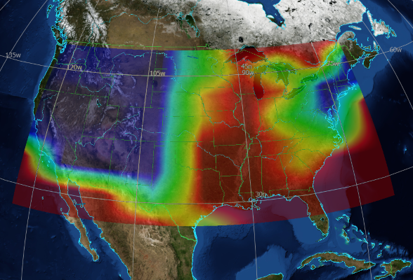
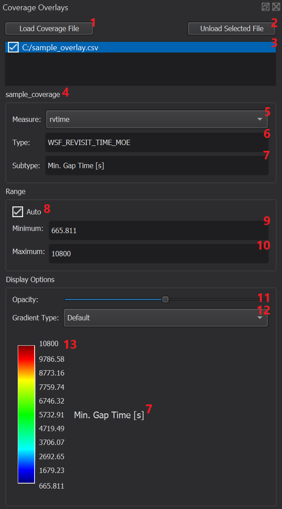

Coverage Overlay - Mystic¶
The Coverage Overlay tool displays coverage data visually in the Map Display. The tool works on coverage overlay files, which may contain multiple data fields. The data values are mapped into colors using one of a number of available gradients.
Controls¶
This tool is available in the View menu. The following describes the controls in the Coverage Overlay tool.
1. Load Coverage File
This button is used to add new coverage overlay files into the set of displayed files.
2. Unload Coverage File
This button will unload the selected file, and remove the associated visual overlay from the Map Display.
3. Loaded File List
This list shows every coverage overlay file that has been loaded during this session. Next to each file name is a check box that can be enabled or disabled to control the visibility of each file’s data. The currently selected file will be highlighted, and the rest of the Coverage Overlay tool will be populated with the relevant options for the selected file.
Double-clicking on a file in this list will center the camera on the overlay. This centering will only occur if the overlay is currently visible.
4. Coverage Name
This label will show the name of the coverage object that produced the data in the currently selected coverage overlay file.
5. Measure Selection
This drop-down box selects which measure available in the selected file will be visualized.
6. Measure Type
This displays the type of the selected measure.
7. Measure Subtype
This displays the subtype of the selected measure, showing the units for the value being displayed, if any.
8. Auto Scale
Selecting this option will set the range of values automatically based on the minimum and maximum values for the currently selected measure.
9. Minimum Value
This shows the value of the selected measure that maps onto the bottom of the selected color gradient. This value is editable if the auto scale option is not selected.
10. Maximum Value
This shows the value of the selected measure that maps onto the top of the selected color gradient. This value is editable if the auto scale option is not selected.
11. Opacity
This sets the opacity of the visualized data. The selected opacity applies for any measure displayed in the currently selected file.
12. Gradient Selection
This drop-down box is populated with the available color gradients. The selected gradient applies for any measure displayed in the currently selected file.
13. Color Legend
This displays the color legend for the currently selected field. This updates with a new gradient selection, or when the range options are modified.